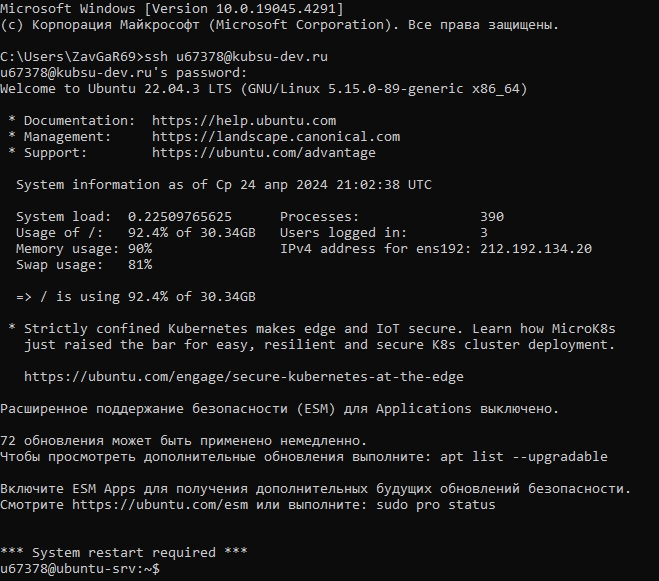
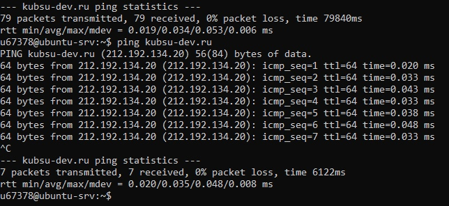
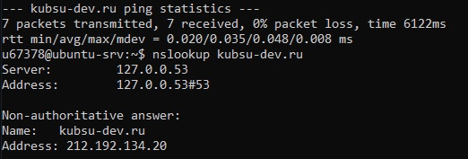
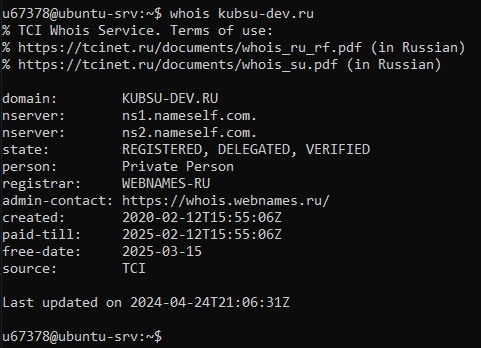
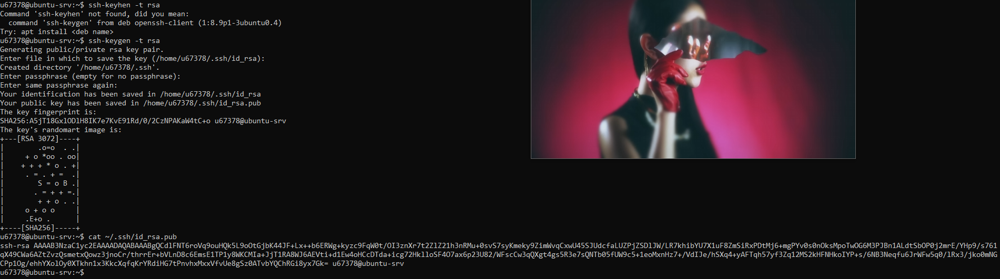
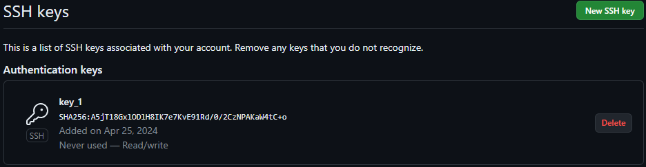
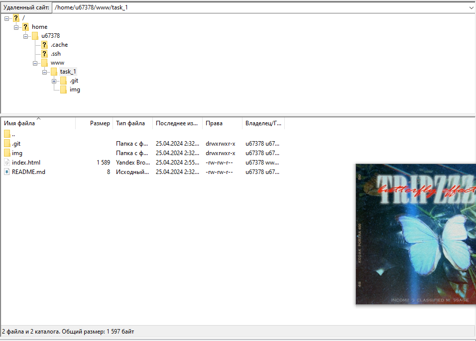

1.
Получение логин и пароль доступа к учебному серверу
kubsu-dev.ru. Подключиться к нему по SSH c помощью клиента.

2.
C помощью команды ping на учебном сервере узнать IP-адрес веб-сервера
kubsu.ru

3.
C помощью команды nslookup узнать A-записи и MX-записи домена kubsu.ru и
kubsu-dev.ru

4.
C помощью команды whois узнать дату регистрации домена

5.
С помощью команды ssh-keygen -t rsa сгенерировал ssh-ключ и поместил его в каталог с адресом (/home/u67364/.ssh/id_rsa)
Затем получил ключи с помощью команды cat ~/.ssh/id_rsa.pub

6.
Добваляем ssh-ключ на github

7.
Подключился через FileZilla и скопировал файлы с сервера на свой компьютер
